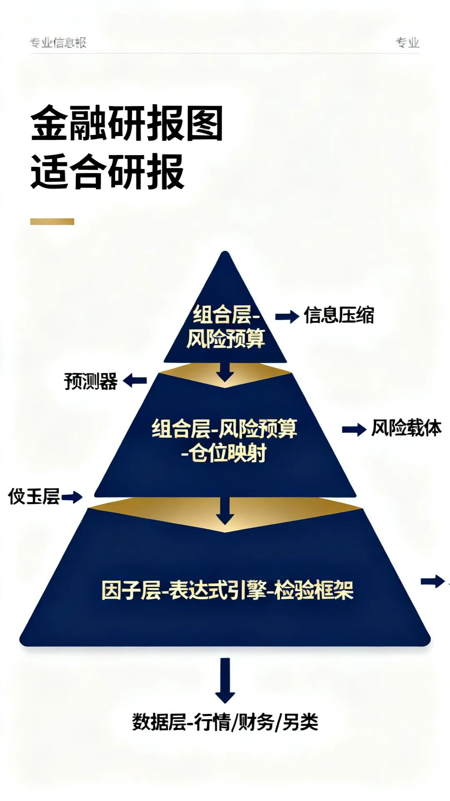
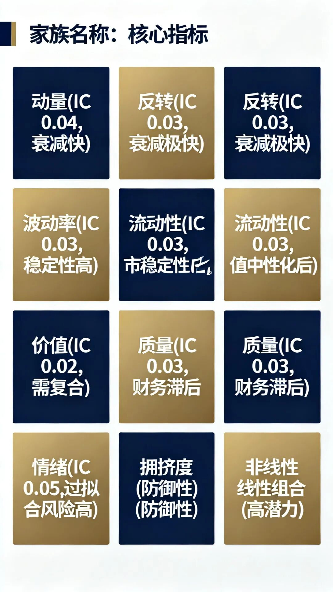
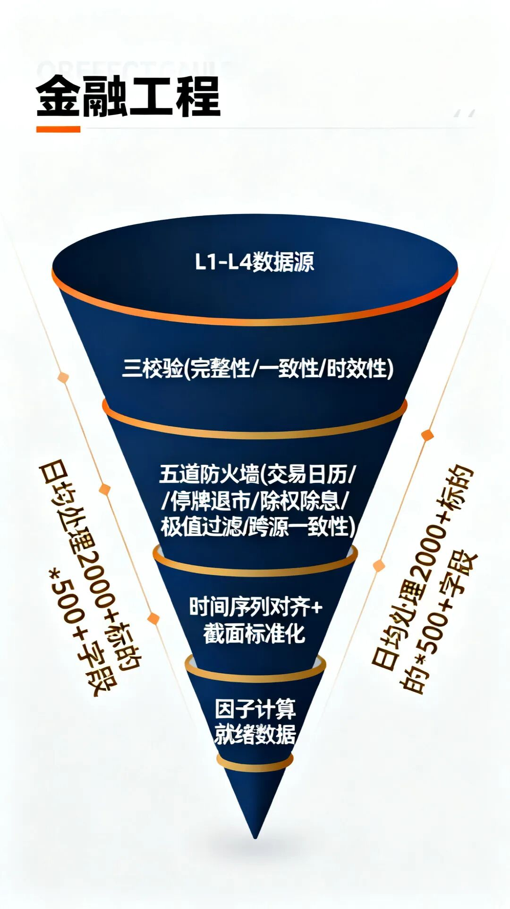
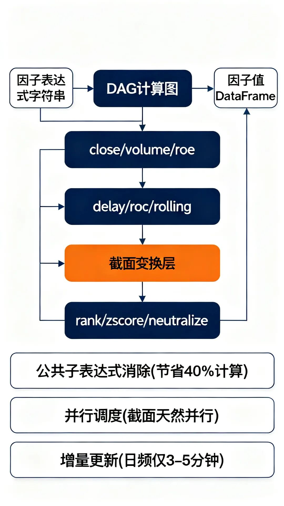
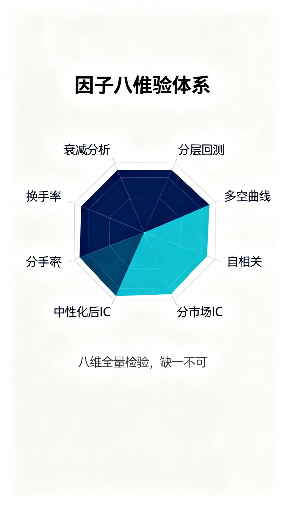
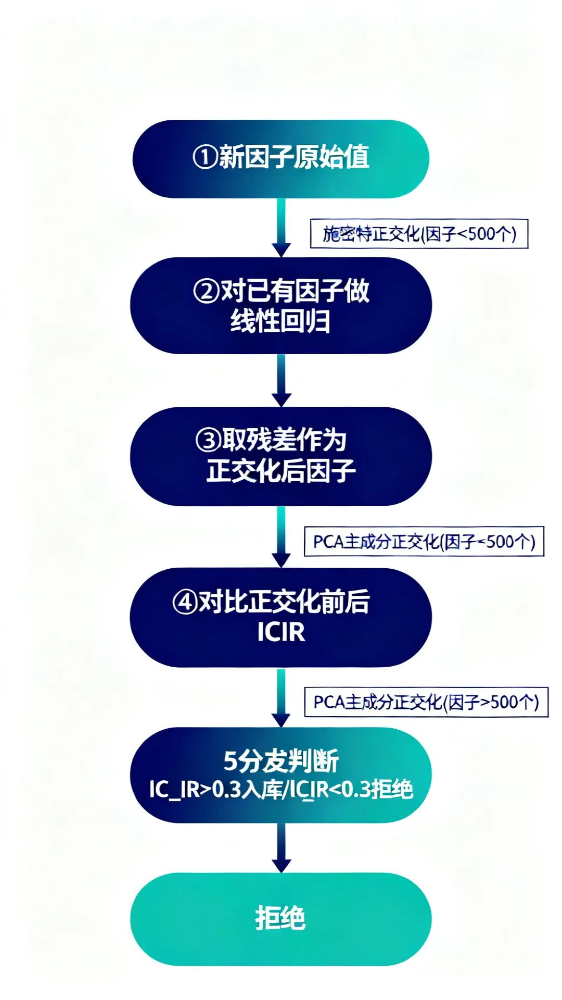
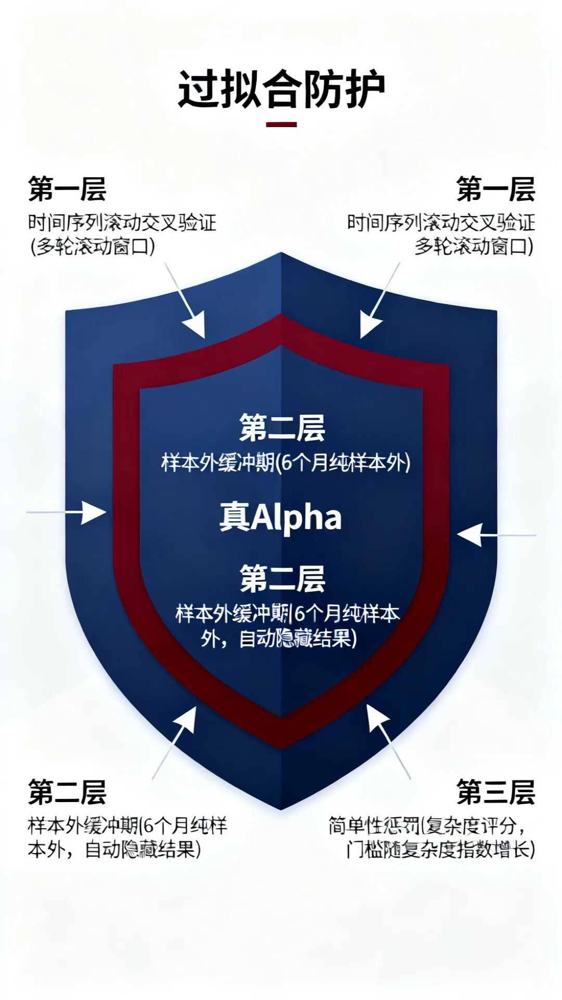
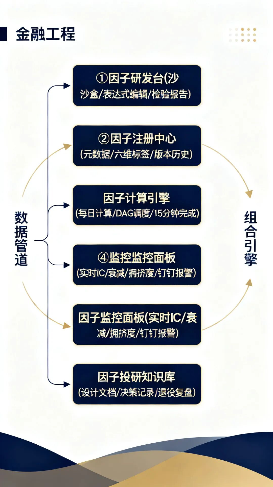

因子挖掘完整框架：从数据到Alpha的工程化方法论
量化因子工程全景 · 深度拆解
昨天去券商谈业务，还和大佬聊到因子。这不，就有了这一篇。
虽说有了Ai的加持，很多人可以获取很多之前未曾接触过的知识。但是还有很多东西，得亲身经历感受，它们才可能成为智慧。
之前群里也有人问量化这六年，关于因子认知变化是什么。
我会说：因子挖掘不是找规律，而是一套工程体系！因为规律遍地都是，找规律的叫数据分析师！因子挖掘是把规律编码成信号，把信号嵌入风险预算，把风险预算映射到仓位。So，它是一套工程体系，不是一个统计问题。
市面上讲因子挖掘的文章不少，但大多停留在"IC要大于0.02"、"分层回测要单调"这种检查清单层面。
真正做过的人知道，因子挖掘真正的难点从来不在单因子检验上，那个门槛太低了，随便一个统计学本科生都能跑出漂亮的IC。真正的难点在工程化：怎么不让因子库变成一锅粥？怎么判断一个新因子不是旧因子的线性组合？怎么在因子衰减之前就闻到味道？怎么让多个研究员协同挖因子而不是互相踩脚？
这篇文章，我把自己六年积累的因子挖掘工程体系完整拆开写出来。从因子的哲学定义到数据管道到表达式引擎到检验框架到正交化到衰减监控，每一个环节都配有实际跑通的案例。抛砖引玉用，我觉得是足够了的。
全文约一万五千字，文章内容比较齐全，阅读需要大半个小时。
如果你想用这篇文章当团队的因子工程SOP模板，尽管拿去。这行里藏着掖着的人太多了，反正我既然写出来了，也就无所谓咯，有需要讨论的，也可以找我讨论。
第一章：因子挖掘的哲学地基
先问一个看似幼稚的问题：什么是因子？
专业点的解释：因子是解释资产收益横截面差异的系统性变量。这个定义没错，但这只是一个统计学视角的定义。从工程视角看，因子有三个更深层的特征，理解这三点，你就能区分"挖因子的"和"搞统计的"。
因子的三重工程定义：
第一，因子是信息压缩：把高维原始数据压缩成一维信号，压缩质量决定因子质量。
第二，因子是预测器而非解释器。好的因子不需要经济学含义优美，它只需要样本外预测稳定。
第三，因子是风险预算的载体，每个因子分配的风险预算，比因子本身的IC更重要。
很多新人一上来就问"怎么挖出IC大于0.05的因子"，这个提问本身就是错的。IC是因子质量的必要不充分条件。高IC因子如果跟你库里已有因子高度共线，加进来只会恶化组合的风险结构。我见过太多人拿着IC 0.08的新因子兴奋地跑来，结果一跑共线性检测，全是冗余。
因子挖掘真正回答的是三个问题：能不能从数据里提炼出别人没看到的信号？这个信号跟库里已有信号是什么关系？这个信号分配到多少风险预算？如果你脑子里只有第一个问题，你挖出来的东西大概率是一堆高IC的冗余品。

第二章：因子分类学，一个不会乱的标签体系
团队做到第三年的时候，我们经历了一次"因子大爆炸"。三个研究员同时在不经沟通的情况下各挖了一批因子，因子库从200个膨胀到600个。然后出事了，回测跑不动了。不是因为算力不够，是因为因子之间的依赖关系已经完全理不清。一个因子改了定义，它下游的复合因子全崩。
那次之后我下定决心设计了一套因子分类标签体系。不是教科书式的"基本面因子/技术面因子"这种粗分类，而是一个多维标签矩阵，每个因子入库时必须打上至少六个维度的标签。
因子六维标签体系：
维度一：数据源类型（行情切片/分钟线/日频财务/另类文本/卫星图像/供应链/舆情/资金流向/期权隐含）
维度二：信号频率（Tick/分钟/日频/周频/月频/季频）
维度三：因子家族（动量/反转/波动率/价值/质量/成长/情绪/流动性/拥挤度/非线性组合）
维度四：变换方式（原始/截面标准化/时序标准化/正交化/行业中性化/市值中性化/非线性变换）
维度五：预测目标（次日收益/周度收益/月度收益/波动率/偏度/尾部风险）
维度六：成熟度（实验阶段/样本外验证中/实盘观察中/已纳入组合/已退役）
六个维度，每个维度3到10个可选值，理论上可以区分上万种因子类型。有了这套标签体系，因子的检索、比对、去重才有了工程基础。
这里重点讲两个在实际工作中最有区分度的维度。
2.1 因子家族：一个避免重复造轮子的分类
十大家族是我推行了三年的分类标准。每个新因子入库时，必须归入至少一个家族，且必须说明它与家族内已有因子的差异化贡献。
动量家族：所有基于"过去N期表现好，未来也表现好"逻辑的因子。包括传统价格动量、行业动量、盈利动量、分析师预期修正动量。这个家族最大的坑是同质化，90%的动量因子互相之间的IC相关性超过0.6。我们团队有一条硬规则：新动量因子必须与库里前10个动量因子的最大IC相关性低于0.3，否则直接拒绝入库。
反转家族：动量家族的反面，但不要以为只是把符号反过来。反转因子的衰减速度比动量因子快3-5倍，这决定了它的持仓周期和风险预算必须独立设置。我们习惯把反转因子单独管理，不给它设止损线，而是设衰减监控，IC跌破阈值且持续超过5个交易日则自动降权。
波动率家族：隐含波动率、历史波动率、已实现波动率、波动率曲面偏度。这个家族的难点在于数据质量。期权市场流动性参差不齐，虚值合约的隐含波动率经常是噪音。我们的处理方式是用OTM程度加权插值，也只保留流动性前30%的合约做计算。
流动性家族：换手率、买卖价差、Amihud非流动性指标、订单簿深度、大单占比。这个家族在A股尤其重要。A股的流动性分布极不均匀，市值最小的那一半股票日均成交可能只有几百万。设计流动性因子时必须做好市值中性化，否则拿到的只是一个市值因子。
价值家族：市盈率、市净率、股息率、企业价值倍数的各种变体。价值因子是量化圈最古老的因子，但它仍然有效，前提是你的定义跟别人不一样。我的经验是，单纯的低PE因子A股已经失效超过五年了，但"低PE+盈利质量过滤+行业相对估值"的复合版本在样本外仍然有显著的超额收益。
质量家族：ROE、ROA、毛利率、经营现金流/利润、应计项目。这个家族的坑在于财务数据的滞后性。你拿到的最新季报数据其实是三个月前的情况了。必须做前向调整，用分析师一致预期或高频另类数据（如卫星图像、招聘数据）做proxy更新。
情绪家族：新闻情感、社交媒体热度、分析师覆盖变化、融资融券余额、龙虎榜数据。情绪因子是近五年增长最快的因子类别，但也最容易被过度拟合。因为情绪数据的维度极高（一篇新闻可以提取上百个特征），如果不做严格的样本外时间序列验证，情绪因子几乎100%过拟合。
拥挤度家族：一个我花了三年时间才真正理解的家族。拥挤度因子衡量的是"有多少人已经在这个因子上做了同样的交易"。包括因子估值价差、机构持仓集中度、因子内相关性。拥挤度因子是防御性的，它的价值不是预测收益，而是预测尾部风险。当拥挤度超过阈值时，你的策略表现不会马上变差，但崩起来会比平时快两倍。
非线性组合家族：这是我们团队最近两年投入最多的方向。不是人手工定义一个"PE除以PB加ROE"的线性组合，而是用树模型、神经网络或遗传规划自动搜索因子组合规则。这个方向潜力巨大，但需要配套的过拟合控制机制。

第三章：数据管道，因子挖掘的血液循环系统
因子挖掘的起点不是数学公式，是数据管道。一个设计良好的数据管道可以让你一天试一百个因子想法，一个糟糕的数据管道会让你在一个数据对齐问题上卡三个小时。
3.1 数据源全景
我们的数据源分为四个层级：
L1核心数据：日频行情（OHLCV、复权因子、停牌标记）、日频财务（三大报表衍生指标）、指数成分股及权重。这些数据必须经过"三校验"才入库：完整性校验（缺失率低于0.01%）、一致性校验（同一标的跨源数据偏差小于1bp）、时效性校验（T日收盘数据必须在T+1日8:00前就绪）。
L2扩展数据：分钟线（1/5/15/30/60分钟）、Tick级数据、龙虎榜、融资融券、限售解禁、股东增减持、分析师预测、龙虎榜席位特征。L2数据的特点是容量大、处理慢，必须建立分区存储和增量更新机制。
L3另类数据：新闻文本（标题+正文+发布时间）、社交媒体情绪（微博热搜/股吧帖子/雪球讨论）、卫星图像（工厂货车流量/港口集装箱密度）、供应链关系图谱、招聘数据、专利数据。另类数据的核心挑战是结构化，把非结构化文本变成数值向量，这个过程每一步都可能引入偏差。
L4衍生数据：基于L1-L3计算的各种中间指标，各种周期的收益率、各种窗口的统计量、行业分类映射、因子暴露估计。L4数据不直接存储（因为可以随时重算），但需要维护计算依赖图，确保上游数据变更时能触发下游重算。
3.2 数据质量防火墙
我经历过的最贵的一次教训，是因为停牌股票的价格没有做前向填充，导致价值因子在停牌日产生了巨大偏差，整个组合在那天跑出了-3%的异常收益。事后复盘，只是少了一行fillna(method='ffill')。
从那以后我们建立了一套数据质量防火墙，包含五个自动化检查点：
检查点一：交易日历对齐。所有时间序列必须锚定同一个交易日历。非交易日的数据（周日的分钟线？周一早上的日频数据？）直接拒绝入库。
检查点二：停牌/退市处理。停牌期间的价格保持不变，复牌首日需标记为特殊事件日。退市股票在退市日前正常保留，退市日后标记为NaN而非0。这个0和NaN的区别，在计算横截面均值时会产生巨大的差异。
检查点三：除权除息调整。复权因子必须逐日验证。A股的分红、送转、配股事件需要在前复权和后复权之间做交叉检验。如果前复权和后复权反推的价格偏差超过1%，说明复权因子有误。
检查点四：极值/异常值过滤。每天对每个截面做MAD（中位数绝对偏差）检测，超过5倍MAD的值标记为异常。但不直接删除，先人工抽查一批，判断是真实的市场异常（如单日涨停）还是数据错误。
检查点五：跨源一致性。同一字段从不同数据源获取的值，偏差超过阈值时自动报警。这个检查点帮我们发现过数次数据供应商的bug。

第四章：因子表达式引擎，从想法到信号的编译器
这是整篇文章最有工程价值的一章。
一个量化研究员每天可能有十个因子想法。如果每个想法都要写一段Python代码来验证，十个想法就是十段代码。一个月两百个想法，你的工作目录里就会堆满一次性脚本。三个月后你完全忘了某个因子是怎么算出来的。
因子表达式引擎解决的就是这个问题：用统一的DSL（领域特定语言）来表达因子逻辑，引擎负责编译、优化和执行。研究员只需要写一行表达式，系统自动完成数据取用、计算调度、结果校验。
4.1 表达式语法设计
我们的因子表达式语法包含三类算子：
基础数据算子：直接引用数据表中的字段。比如close引用收盘价、volume引用成交量、roe_ttm引用滚动ROE。每个字段都有明确的更新频率和最大延迟时间。
# 基础数据算子示例 close # 日频收盘价（前复权） volume # 日频成交量（手） roe_ttm # 滚动ROE（季频更新） amount # 日频成交额（元） high, low # 日频最高价、最低价
时序变换算子：对单个标的的时间序列做变换。delay(T)将序列后移T期（注意不是前移，后移意味着用历史数据）、delta(T)计算T期差值、roc(T)计算T期收益率、rolling(func, window)在滚动窗口上应用聚合函数、ewm(halflife)指数加权移动平均、rank_ts(window)时序排名。
# 时序变换算子示例 delay(close, 5) # 5个交易日前收盘价 delta(close, 5) # 近5日价格变动 roc(close, 20) # 20日收益率 = (close - delay(close,20))/delay(close,20) rolling(mean, volume, 20) # 20日均量 rolling(std, close, 60) # 60日波动率 ewm(close, 10) # 10日半衰期指数加权均线
截面变换算子：在每个时间截面上对所有标的做变换。rank()截面排名（返回0到1之间的分位数）、zscore()截面标准化（减均值除标准差）、demean()截面去均值、industry_neutralize(expr, industry_field)行业中性化、market_neutralize(expr)市值中性化。
# 截面变换算子示例 rank(roe_ttm) # ROE截面排名（0~1分位数） zscore(roc(close, 20)) # 20日收益率的截面z-score industry_neutralize(roc(close, 60), sw_l1) # 行业中性化后的60日动量 market_neutralize(rank(roe_ttm)) # 市值中性化后的ROE排名
4.2 复杂因子表达式实例
来看一个实际的因子，基于波动率调整的行业中性化动量反转因子。这段因子逻辑如果写原始Python代码大概要30行，在表达式引擎里就是一行：
# 波动率调整的行业中性化动量反转因子
# 逻辑：短期反转（5日）和中期动量（60日）信号冲突时，
# 用近期波动率加权决定倾向哪边
factor_vol_adj_mom_rev = zscore(
industry_neutralize(
ewm(
zscore(roc(close, 5)) * 0.4
+ zscore(roc(close, 60)) * 0.6,
20
),
sw_l1
)
)
这行表达式表达了七个步骤：(1)取收盘价 (2)计算5日收益率 (3)计算60日收益率 (4)分别做截面z-score标准化 (5)加权组合 (6)20日指数加权平滑 (7)行业中性化后再次z-score。如果是手写Python，光数据对齐就够折腾的了。用表达式引擎，编译、优化、并行执行全自动完成。
4.3 表达式引擎的编译优化
引擎编译表达式时做三件事：
公共子表达式消除。如果两个因子表达式共享同一个子表达式（比如都用了roc(close, 20)），引擎只计算一次然后复用。在我们的生产环境中，这个优化将批量因子计算时间缩短了40%。
计算图调度。引擎把表达式展开成有向无环图（DAG），识别可以并行执行的节点。截面操作天然可以并行（不同标的之间无依赖），而时序操作必须串行（今天依赖昨天）。引擎自动分配计算资源。
增量更新。历史因子值不需要每天重算，引擎通过数据依赖图追踪哪些基础数据发生了变化，只重算受影响的部分。这个优化的效果是，日频增量更新只需3-5分钟，而全量重算需要2小时。

第五章：单因子检验框架，不只是看IC
如果你面试量化研究员时问"因子检验怎么做"，对方脱口而出"看IC和IR"，这人大概率只在书本上做过因子。真正跑过实盘的人知道，单因子检验有八个维度，IC只是其中之一。
5.1 八维检验体系
维度一：IC分析。Rank IC比Pearson IC更稳健，因为不受极端值影响。除了看IC均值，更要看IC标准差（衡量稳定性）和IC_IR（IC均值除以IC标准差，业界红线是0.3，我们团队内部卡0.5）。还有一个容易被忽略的指标是IC正率，IC为正的比例。如果IC均值0.03但正率只有52%，这个因子实质上跟抛硬币差不多。
维度二：分层回测。按因子值分10组，看各组收益是否单调。单调性是比IC更直观的质量信号。但要注意：分层回测的假设是等权持有，这跟你实际组合的权重方案可能有差异。我们的做法是同时跑等权分层和市值加权分层，对比看。
维度三：多空组合分析。做多最前10%同时做空最后10%，看多空组合的累计收益曲线形态。好的因子应该呈现稳定上升的曲线，而不是阶梯状（说明只在少数几个时点赚钱）或U形（说明因子在两端的预测稳定但中间混乱）。
维度四：因子自相关。计算因子值的一阶自相关。自相关系数告诉你因子的更新频率，自相关接近0的因子每天都在巨变，适合高频；自相关接近0.95的因子变化缓慢，适合低频。如果你把一个高自相关的因子用在日频策略里，你每天调仓的收益其实大部分被交易成本吃掉了。
维度五：市值/行业中性化后表现。原始因子IC很高不代表什么，很多时候你只是挖到了一个换了马甲的市值因子或行业因子。我们要求所有因子同时报告原始IC和中性化后IC，两者的差值如果超过30%，说明因子的原始信号严重依赖市值或行业暴露。
维度六：分市场状态表现。将样本期划分为牛市（市场涨幅前30%的月份）、熊市（跌幅前30%）和震荡市（中间40%），分别看因子在不同市场环境下的IC。这个维度的信息量极大，有些因子只在牛市有效，有些只在震荡市有效，极少数能在三种环境都保持正IC。后者才是我们愿意分配大风险预算的因子。
维度七：换手率估算。如果你把因子用作策略信号，每次调仓的换手率决定了交易成本能否被因子收益覆盖。换手率太高（>80%单边）的因子，即便IC看起来很漂亮，扣掉冲击成本和印花税后几乎没有净收益。
维度八：衰减分析。计算因子IC随持仓周期的衰减曲线。有些因子的IC在持仓第一周最高然后迅速回落（典型反转因子），有些在持仓第三周才开始发力（典型基本面因子）。衰减曲线决定了因子的最优调仓频率。
5.2 统计显著性的正确姿势
学界习惯用t检验来判断因子IC是否显著。但这个做法有两个致命问题：
第一，IC序列通常自相关。t检验假设样本独立，但这个假设在时间序列上不成立。我们用的是Newey-West调整后的t统计量，通过估计自相关结构来修正标准误。
第二，多重检验问题。如果你同时检验100个因子，即便全是噪音，也会有大约5个在5%的显著性水平上"通过"检验。如果你从这100个因子里挑最显著的5个出来用，你正在做选择偏差（selection bias），实际犯第一类错误的概率远高于5%。
我们团队的做法是：所有因子必须报告经过Bonferroni校正的p值（根据同期检验的因子总数调整显著性阈值），并且必须通过FDR（False Discovery Rate）控制。简单说，如果你这一轮挖了100个因子，你的p值阈值不是0.05，而是0.05除以100等于0.0005。

第六章：因子正交化与复合，从零件到引擎
单个因子再漂亮，也只是零件。量化策略真正的威力在于如何把几十上百个因子组装成一台运转平稳的发动机。这中间最关键的技术环节就是正交化。
6.1 为什么要正交化
假设你有三个因子：20日动量、60日动量、120日动量。它们的IC相近，但彼此之间的相关性高达0.7以上。如果你简单等权组合这三个因子，你实际上不是买了三个独立的信号，而是买了1.3个信号（1个动量主成分+0.3个噪音）。因子之间的共线性不仅降低了信息效率，还会在特定市场条件下引发共振，当动量全面回撤时，三个因子一起砸，组合跌幅远超单因子波动率模型预测的值。
正交化的目的不是消除因子之间的相关性（完全无关的因子几乎没有），而是将每个新因子对已有因子的冗余信息剥离，只保留增量信息。这样，当你加入新因子时，你清楚地知道它贡献了多少独立的信息增量。
6.2 施密特正交化：一个实用方案
我们团队在实践中采用的是逐次施密特正交化方案。流程很简单：
第一步，把已有因子按入库时间排好优先级，越老、越稳定的因子优先级越高。
第二步，对新因子做回归，用所有已有因子做自变量，取残差作为正交化后的新因子。
第三步，比较正交化前后的IC。如果正交化后IC仍然显著（IC_IR > 0.3），说明这个因子确实含有增量信息，可以入库。如果正交化后IC几乎消失，说明它只是已有因子的线性组合，直接拒绝。
这个方法的好处是直观、可解释。每个因子的独立性贡献清晰可追踪。缺点是当因子数量很多（超过500个）时，数百次回归会变得计算密集。这时可以考虑切换到PCA方案，用前K个主成分作为基准，新因子对主成分做回归取残差。
6.3 因子加权：IC加权 vs 优化加权
正交化之后是加权。业界最常用的两种方案：
IC加权：每个因子的权重与其历史IC_IR成正比。优点是简单、稳健，缺点是忽略了因子之间的残差相关性。
优化加权：通过均值-方差优化确定因子权重，输入是因子协方差矩阵和预期IC向量。优点是在理论上最优，缺点是对因子协方差矩阵的估计误差非常敏感。如果协方差矩阵估计不准，优化出来的权重反而比IC加权更差。
我们的实践是：在因子数量较少时（<50个）用优化加权，配合收缩估计（shrinkage estimator）来稳定协方差矩阵；因子数量超过50后切换为IC加权，因为优化加权的噪声放大效应开始超过其理论优势。

第七章：过拟合，量化圈最大的沉默成本
如果你觉得过拟合只是"样本内好样本外差"，你对过拟合的理解还停留在科普层面。实际的过拟合比这隐蔽得多。你可能不知道的是，即便是严格的样本外验证，也有可能已经被污染了，因为你在样本外测试了100个因子后选了最好的10个，这个选择过程本身就是过拟合。
7.1 过拟合的四种形态
第一类：经典过拟合。样本内IC 0.08，样本外IC 0.01。这是最容易被发现的，只要做样本外验证就能抓到。
第二类：选择性过拟合。你挖了100个因子，样本外都跑了，然后用IC排名选了前10个入库。表面上看每个因子都经过了样本外验证，但实际上前10的样本外IC大概率高估了它们的真实预测能力，这10个里的前几名可能恰好是样本外运气最好的那批。你只是把过拟合的风险从"样本内选因子"转移到了"样本外选因子"。
第三类：定义过拟合。你在因子定义中引入了一个参数（比如移动平均窗口长度），然后通过扫描不同参数值找到了最好的那个。这同样构成过拟合，你把参数的优化当成了因子价值的证据。正确的做法是，要么固定参数（用财务逻辑而非数据优化来确定窗口长度），要么对所有扫描过的参数组合做多重检验校正。
第四类：时代过拟合。因子在2019-2022年表现优异，在2023-2025年完全失效。这不是因子衰减，而是你抓到了一个特定市场环境下的结构特征（比如疫情后的流动性泛滥周期），这个特征不一定重现。避免时代过拟合的唯一方法是把样本切得足够碎，不要只看全样本IC，要逐年逐季地看。
7.2 我团队的过拟合防护体系
我们建立了一套三层防护：
第一层：时间序列交叉验证。不是简单的训练集/测试集二分，而是滚动窗口交叉验证。比如用2016-2018训练、2019验证、2020-2022训练、2023验证，重复多轮。因子在所有验证窗口上的IC均值和标准差才是靠谱的性能指标。
第二层：样本外缓冲期。新因子入库后不直接加入组合，先在"观察列表"中跑满6个月的纯样本外。这6个月里，研究员不能看这个因子的样本外IC（系统自动隐藏），避免选择性过拟合。
第三层：简单性惩罚。同等预测能力下，优先选择表达式更简单的因子。我们的因子复杂度评分公式是：复杂度 = 算子数量 × log(参数搜索空间大小)。复杂度越高的因子，入库门槛越高，它的IC_IR底线不是0.3，而是随复杂度指数增长。
一个违反直觉的观察：在我的职业生涯中，那些真正在实盘中持续贡献Alpha的因子，大多数在论文阶段就已经有不错的IC了，不需要大量的参数调优。如果一个因子需要你把参数调到非常特定的值才能出效果，它几乎不可能是真Alpha。这条经验法则帮我省下了无数用在注定失败方向上的时间。

第八章：因子衰减与生命周期管理
所有因子都会衰减。区别只在速度。一个好的因子管理体系，不仅要能挖出新因子，更要能及时识别哪些因子在衰减、衰减的理由是什么、是否应该退役。
8.1 衰减的三种原因
第一种：拥挤衰减。因子表现好的时候，资金涌入，推高因子内股票的估值，直到因子不再有效。这是最典型的衰减模式，周期通常在几个月到一两年不等。可以通过监控因子估值价差（最高组和最低组的估值差异）来预警。
第二种：结构衰减。市场微观结构发生变化（如T+0规则调整、涨跌停幅度改变、融券规则修改），导致因子依赖的市场机制不复存在。这种衰减往往是突发的、不可逆的。2023年A股全面注册制改革就是一个典型的触发因子结构衰减的事件。
第三种：时代衰减。宏观经济环境和投资者结构的变化，使因子失去了存在的基础。比如2000年之前A股的小市值效应极其显著，但随着机构化程度提高和外资进入，纯小市值因子的超额收益在过去十年持续缩水。这是一种慢性的、不可逆的衰减。
8.2 因子退役决策框架
因子退役不是看IC掉到负数就删。我们有一套系统化的退役决策框架：
触发条件一：滚动12个月IC_IR低于0.2且连续3个月未回升。注意是"且"，单独的短期IC波动不触发退役。
触发条件二：因子拥挤度超过历史80%分位数且IC开始趋势性下行。拥挤本身不可怕（拥挤的因子往往是好因子），但拥挤叠加衰减就是危险信号。
触发条件三：市场结构发生重大变化（通过人工标注的事件日历判断）。这类退役不取决于因子表现，而是逻辑前提被否定。
退役不是删除，而是降权到观察模式。退役因子仍然每天计算并入库，权重设为0但保留在因子库里。如果未来IC恢复（这种情况极少发生，但发生过），可以重新启用。
第九章：工程化因子工厂，让团队跑起来
前面的内容都在讲"怎么挖一个因子"。这一章讲"怎么让一个团队持续地、高效地、不出事故地挖因子"。这两个问题的复杂度不在一个量级。
9.1 因子工厂架构
我们的因子工厂分为五个模块：
因子研发台：研究员的工作环境，包含交互式数据浏览器、因子表达式编辑器、单因子检验报告生成器。每个研究员有自己的沙盒环境，可以自由试验但不影响生产因子库。
因子注册中心：所有入库因子的元数据管理系统。存储因子的表达式、六维标签、检验报告、版本历史、依赖关系图。这是整个因子工厂的"大脑"。
因子计算引擎：每天凌晨自动执行全因子计算流水线。从数据管道取数、解析表达式依赖图、并行计算、写入因子值存储。日均计算300+因子在5000+标的上，整体耗时不超过15分钟。
因子监控面板：实时展示所有在库因子的关键指标，实时IC、滚动IC_IR、拥挤度、衰减趋势。任何指标触发阈值自动钉钉报警。
因子投研知识库：每个因子的设计文档、决策记录、退役复盘。新研究员入职第一周的任务就是读完知识库里所有活跃因子的设计文档。这个知识库的价值随着团队规模增长呈指数级增长。
9.2 协同开发的规则
多人挖因子最容易出的事故是互相踩脚。两个人同时挖出了一个本质相同的因子，分别入库，然后在因子组合中被重复加权，这种事发生一次就够让组合跑出莫名其妙的回撤。
我们的解决方案是一个强制性的入库前检查：新因子在入库时，系统自动计算它与库中所有已入库因子的截面相关性矩阵。如果新因子与某个已有因子的相关性超过0.7，系统自动拒绝入库并提示"疑似冗余因子，请与XX因子作者沟通确认差异后重新提交"。
这个机制运行三年来，成功拦截了超过40%的新因子入库申请。被拦截的因子大部分确实只是已有因子的变体，但也有少数是真的发现了不同角度，这种情况下研究员会在沟通后调整因子定义，确保与已有因子的差异化。
9.3 自动因子挖掘的边界
不得不提自动因子挖掘。
过去两三年，遗传规划和强化学习在因子挖掘领域成了热门方向。我也投入了相当多的资源在这个方向上。
结论是：自动挖掘是极其强大的辅助工具，但不是替代品。
自动挖掘能帮你快速生成大量候选因子，批量跑检验，自动过滤。但它的致命弱点是过拟合控制极为困难，遗传规划本质上是在一个巨大的搜索空间中做优化，如果不加约束，它一定能给你找一个IC 0.15的因子，但这个因子在样本外会输得精光。
我们的做法是：自动挖掘用于"广度探索"，在已经验证有效的因子家族内部，自动搜索参数和变换方式的变体。人工研究员负责"深度突破"，发现新的数据源、提出新的因子逻辑、判断自动挖掘结果的质量。两者分工明确，不互相替代。

第十章：实战教训，我踩过的五个大坑
写到最后一章，讲五个真实的坑。每一个都让我付出了至少一个月的修复代价。
第一坑：未来函数。不是教科书上那种明显的"用T日数据预测T日收益"，而是隐蔽的，在财务数据发布日前使用当季财务数据。A股的季报发布日期有一周到两个月的滞后，但很多数据库默认按报告期对齐而非发布日期对齐。如果你不对齐发布日期，你实际上用了未来信息。这个坑让我们的一个因子样本内IC从0.05"涨"到了0.09，样本外直接归零。修复方法是严格基于发布日期做点对点对齐。
第二坑：幸存者偏差。在回测中只计算了存续到回测期末的股票，忽略了那些退市的。特别是在2015-2016年的A股，大量并购重组标的退市或长期停牌，如果你的回测只含"活到最后的"，你高估的收益非常可观。我们的修复是在回测引擎中保留退市股票在退市日前所有历史数据，退市后按0收益处理。
第三坑：因子字典爆炸。团队早期的因子命名完全没有规范，有人用动量5d，有人用mom_5d，有人用Momentum_5。三个名字对应的是同一个东西。直到因子库超过200个的时候，我们才意识到连"库里到底有多少个独立因子"这个问题都回答不了。后来花了整整一个月做因子字典清洗和标准化命名。
第四坑：回测窗口的动态偏差。我们曾经用"过去三年"的固定窗口回测新因子，但没注意到这个窗口的起点随着时间推移一直在变化。2020年加入的"过去三年"是2017-2019（牛市+震荡），2023年加入的"过去三年"是2020-2022（疫情+大跌+反弹）。两个因子虽然都是在"过去三年"上优化的，但面对的市场结构完全不同。修复方法是使用滚动固定长度窗口而非锚定当前日期的滑动窗口。
第五坑：忽略交易成本。这是最贵的一课。一个换手率90%的因子，IC 0.04看着不错，但扣掉双边千一印花税和冲击成本后，年化净收益从15%降到了2%。自那以后，所有因子检验报告必须包含一个"扣费后净IC"指标。这个指标才是你能吃到的真实Alpha。
这篇文章写到这，就差不多结束咯。
如果你只有时间记住一件事，记住这个：因子挖掘的本质不是找规律，是建体系。规律会被市场发现然后衰减，体系会持续产出新规律。如果你现在还在手动写单因子检验脚本，花一个月先把表达式引擎和自动化检验流水线搭起来。这个投入的回报，比你再挖十个因子都高。
我花了六年才把这套体系打磨到现在的程度。我不敢说它是最优的，但它至少是跑通了、验证过、能持续产出的。希望这篇文章能帮你省下一些踩坑的时间。
共勉。
【免责声明】
本文仅为量化研究方法论与因子工程体系的技术探讨，不构成任何投资建议。文中提及的因子案例、IC数值、检验框架均为方法论示例，不代表实际策略表现。量化策略的历史回测结果不代表未来表现，策略存在过拟合风险与市场环境变化风险。
市场有风险，投资需谨慎。请勿依据本文任何内容做出投资决策。